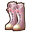

Lv 85 Armor Quest
Lift the curse on a zombie blacksmith's cursed Lv 85 armor.
- Level
- 85 or higher
- Items needed
- Gold for the cursed armor, and at least 3 reinforcement crystals (any kind)
- Reinforce
- The armor must be +3 or higher
- Reward
- A cursed Lv 85 top with its curse lifted, and Apprentice Blacksmith Arus's shop of Lv 85 pants and shoes
On this page
Before you start
- Finish the metal armor part of the Lv 35 Armor Quest first. Apprentice Blacksmith Arus only joins in once his shop is open.
- Bring at least 3 reinforcement crystals of any kind, for example 3 ×
 Life Crystal (where to find it), and at least 15,000 G for the fees.
Life Crystal (where to find it), and at least 15,000 G for the fees.
Walkthrough
1. Buy the cursed armor
- Go to Continental Cave B4F. North of the portal stands a zombie; talk to it and follow it. It takes you to the upper corner of the floor.
-
Follow the path to Blacksmith Smiff and talk to him.
-
Buy the cursed armor for your job and put it on.
Names with (M) are for men and (F) for women.
Swordsman, Blade Master, Bounty Hunter
Fencer, Knight, Dark Stalker
Scout, Assassin, Commando
Archer, Striker, Gunner
Wizard, Sorcerer, Sage
Shaman, Elementalist, Enchanter
Vates, Druid, Bard
Warlock, Cabalist, Necromancer
Miner (Tatarabe), Blacksmith, Engineer (Machinery)
Farmer, Alchemist, Marionettist
Ranger, Explorer, Treasure Hunter
Merchant, Trader, Gambler
 Blacksmith Smiff
Blacksmith Smiff
2. Ask Arus for help
-
While wearing the cursed armor, go to Uptown and talk to Apprentice Blacksmith Arus. He sends you to his partner in Lower Part of Iron City.

3. Visit Arus's partner
-
Go to Lower Part of Iron City and enter the house with the blue roof at the top middle of the map. Talk to Arus's Significant Other while wearing the cursed armor. She asks you to strengthen it first.
4. Reinforce the armor to +3 or higher
- Take the armor off and reinforce it to +3 or higher with the Ironworks Receptionist in the Forge Lobby, on the same map. Each try costs 5,000 G. See Equipment Upgrades.
5. Lift the curse
- Put the reinforced armor (+3 or higher) back on and talk to Arus's Significant Other. Choose to lift the curse. She takes you to a room for the ritual.
-
Talk to her there to finish lifting the curse, then talk to her once more back in her house.
Your cursed armor becomes:
Swordsman, Blade Master, Bounty Hunter
Fencer, Knight, Dark Stalker
Scout, Assassin, Commando
Archer, Striker, Gunner
Wizard, Sorcerer, Sage
Shaman, Elementalist, Enchanter
Vates, Druid, Bard
Warlock, Cabalist, Necromancer
Miner (Tatarabe), Blacksmith, Engineer (Machinery)
Farmer, Alchemist, Marionettist
Ranger, Explorer, Treasure Hunter
Merchant, Trader, Gambler
6. Arus's new shop
-
Go back to Apprentice Blacksmith Arus in Uptown. He now sells the Lv 85 pants and shoes, but no hats:
Names with (M) are for men and (F) for women, but Outlaw Boots and

Genius Boots(M) are for women. The pants are for men only.Swordsman, Blade Master, Bounty Hunter
Fencer, Knight, Dark Stalker
Scout, Assassin, Commando
Archer, Striker, Gunner
Wizard, Sorcerer, Sage
Shaman, Elementalist, Enchanter
Vates, Druid, Bard
Warlock, Cabalist, Necromancer
Miner (Tatarabe), Blacksmith, Engineer (Machinery)
Farmer, Alchemist, Marionettist
Ranger, Explorer, Treasure Hunter
Merchant, Trader, Gambler
Good to know
- The armor must be at least +3. Arus's Significant Other checks the armor you are wearing on your upper body.
- Each character must talk to Blacksmith Smiff. Helping another character buy their armor doesn't start the quest for you.